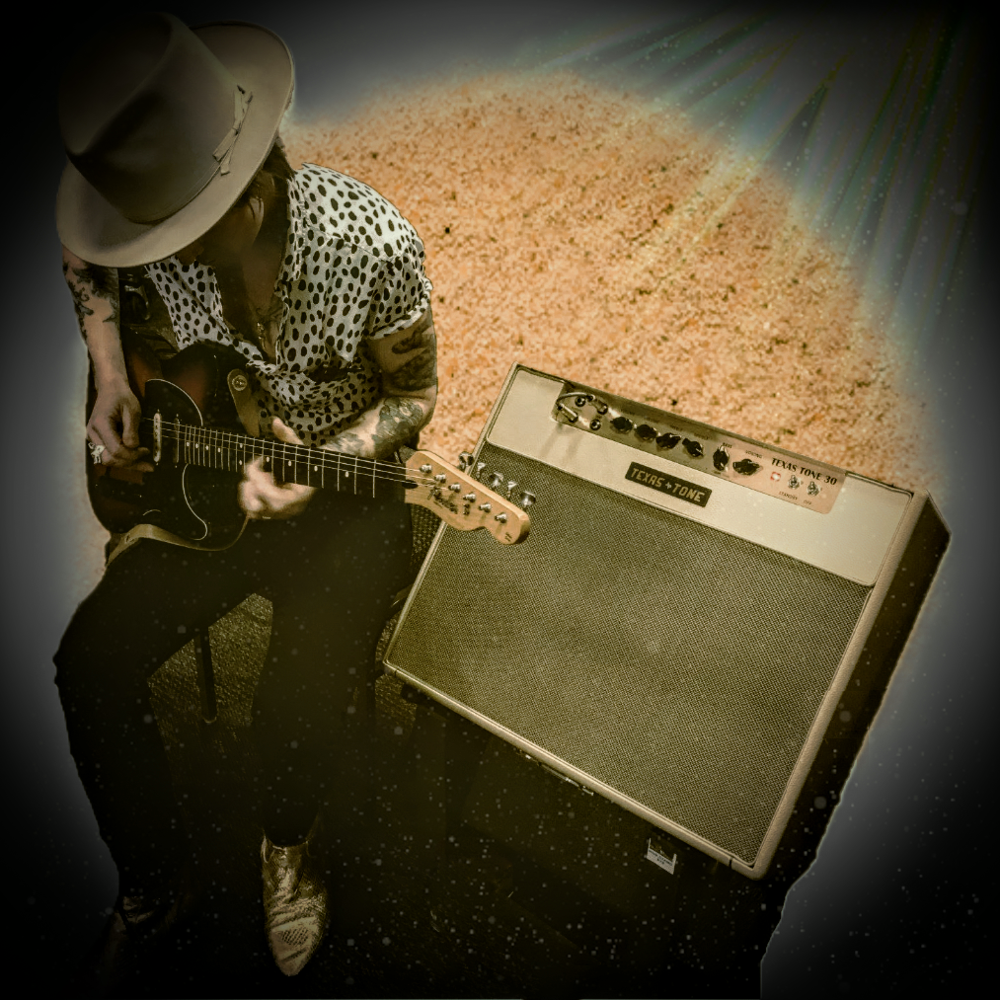
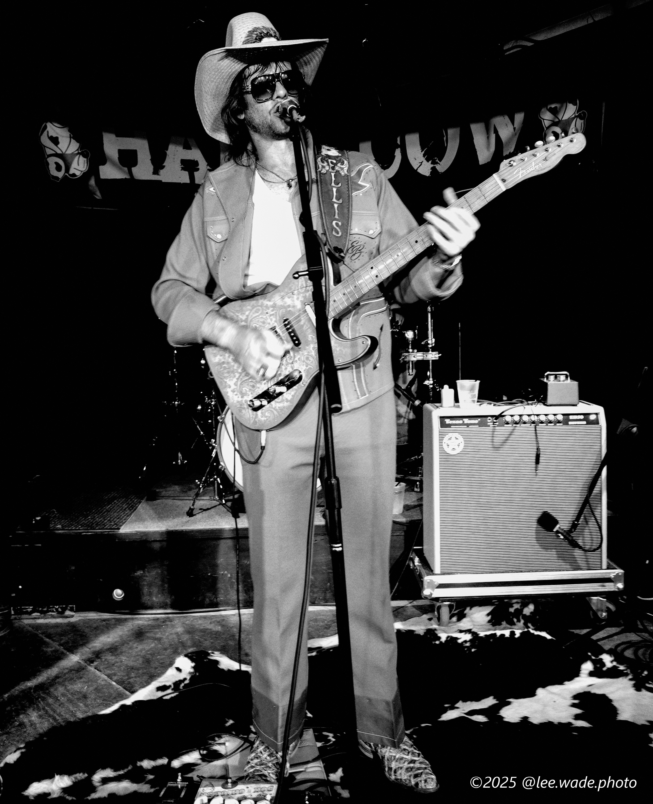
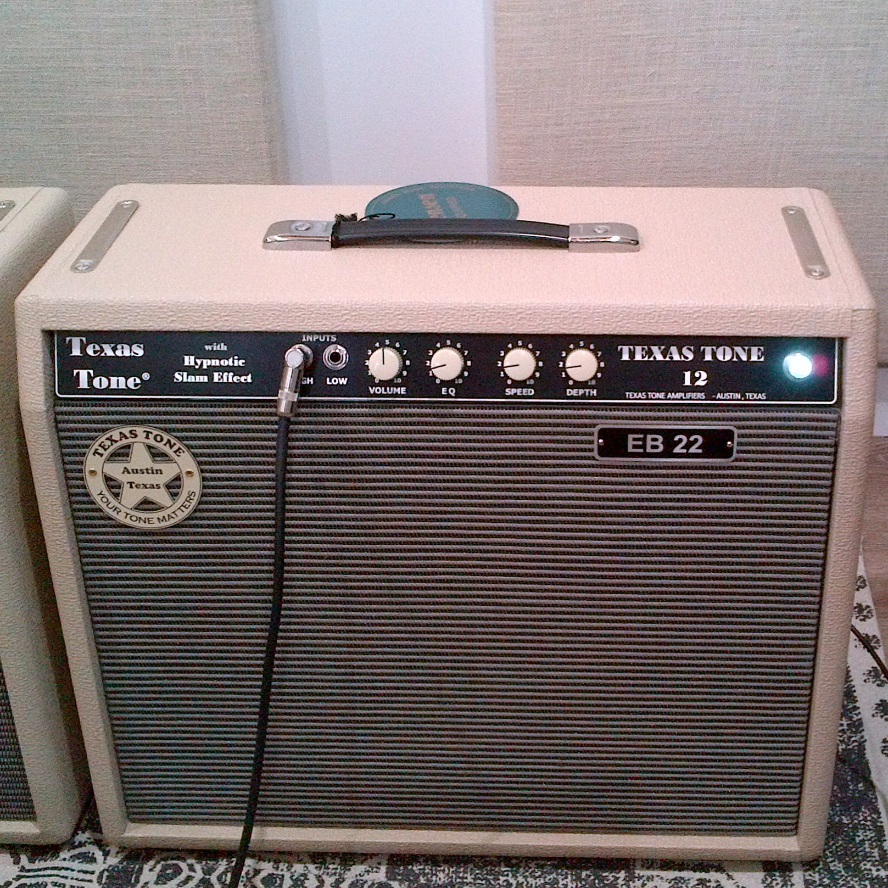
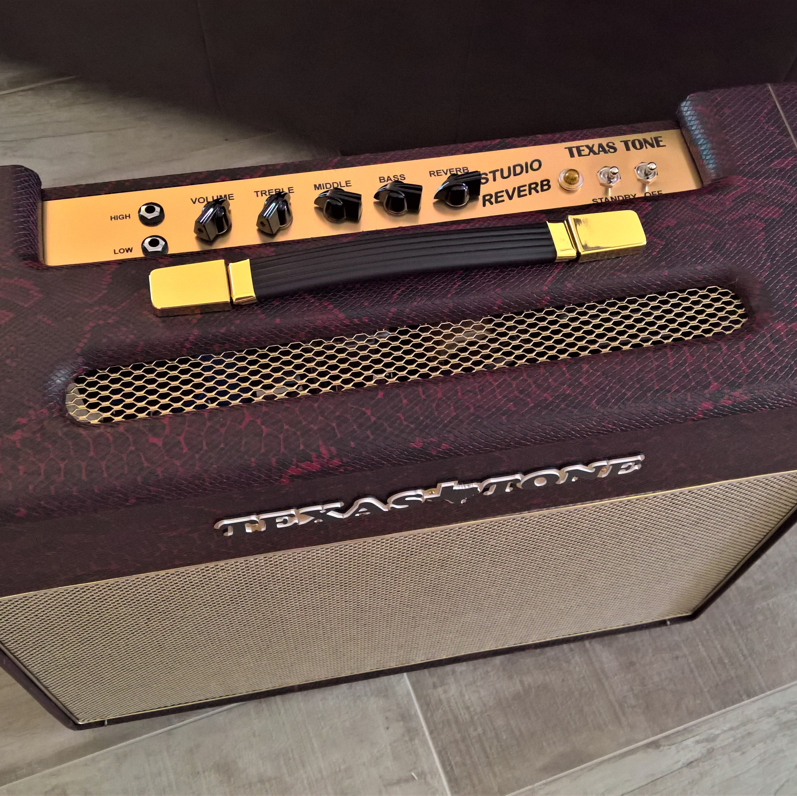

Amps That Take Center Stage
Perfomance Series amps feature power, flexibility, portability, and above all, awesome tone. Users of these amp call them "the best amp ever", "magical", "amazing", and "the exact sound that I was looking for." See our Quotes page for their reviews.
Set yourself up for success with a Texas Tone® Perfomance Series hand-wired custom tube amplifier.

Defining Tone
You need, and deserve, a signature sound. At Texas Tone Amps, that's what we're all about. See our selection of signature sound amps Artist Amps, and we're sure that you'll love them as much as these artists do.
Find your signature sound with a Texas Tone® Artist Series hand-wired custom tube amplifier.

Play the Blues Away
From our original 12-Watt Texas Tone 12 - called "the sound of Austin, Texas," to the 50-Watt XTM45, Texas Tone has you covered from the Mississippi Delta up to Chicago and back down to Texas with just the right amp to make your axe cry and sing with a Blues Series hand-wired custom tube amplifier.
No need to cry in your beer, let your guitar and Texas Tone® amp carry you through the blues.

Texas Tone Studio Series
Amps built for awesome tone without ear-splitter volume. Amps that have a whisper-quiet noise floor. Amps designed to make you sound great in your studio and cut throuth the mix.
These Texas Tone® amps set the standard for studio, home, or small stage use.